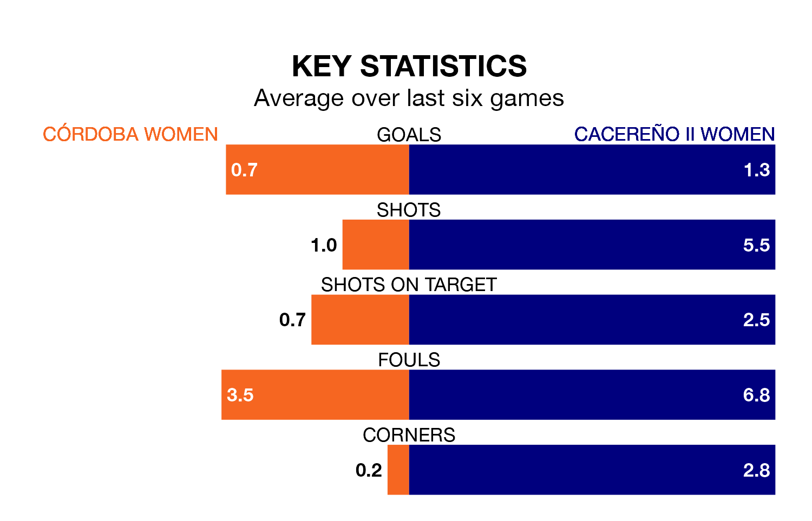

Cacereño II Women travel for Sunday's early match against Córdoba Women looking to bounce back from defeat last time out in Segunda Federación Femenina.
Cacereño II, who sit zero in the league after 18 games, fell to a 1-0 home defeat to Valencia II Women on January 28.
They face a Córdoba side who also lost their last match, a 1-0 defeat to CD Getafe Women, and who sit zero in the table.
With 17 goals in 18 games so far this season, Córdoba are the league's joint--10th-lowest scorers with 0.9 goals per game. And they are conceding more than average, letting in 28 goals at a rate of 1.6 per game.
Cacereño II are also below average scorers, with 1.2 goals per game, compared to a league average of 1.3. They have conceded 1.4 goals per game.
The home side are in bad form in Segunda Federación Femenina, with one win and a draw from their last six games.
With two wins and four losses over that period, the visitors' form is slightly better – they have taken six points from 18, compared to Córdoba's four.
Updated: 14:12 (UTC), 02/02/24